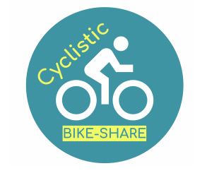

January 15, 2023
In this project, I performed EDA on Barcelona's Airbnb's dataset, did hypothesis testing and built a logistic regression model in R to understand the impact of ratings and other parameters on a super host and made visualizations in Tableau


Analyzed global greenhouse gas emission dataset to understand its major contributors in terms of countries, industries, etc.
and provided recommendations using dashboards and story feature in Tableau to mitigate increase in emissions by suggesting alternative sources based on historical, geographical and geo-political data

Conducted a case study based on a national veterans’ organization data using pandas and numpy to classify participants into donors and non-donors, using neural network and decision tree in Python
and forecasted the fund donated by each donor using linear regression model and predicted $13 per donor which increased the net profit by 10%

Gathered and investigated data in Excel which tend to indicate suicide using support vector machine and multilayer perceptron algorithms with the help of matplotlib and sklearn Python packages and
successfully identified 60% of individuals who might commit suicide

Gathered insights from parameters such as ride duration, ride type, using libraries like dplyr and tidyverse in R, and SQL
Identified that 90% cyclists prefer to be casual riders and recommendations were provided in Tableau to increase membership